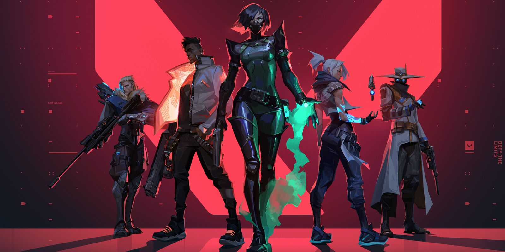

My favorite online games:
Valorant
Valorant is a free-to-play first-person tactical hero shooter developed and published by Riot Games.

My favorite dishes:
Adobo, This is my first favorite food because this is the first dish that i learned to cook.
Sinigang, This is my second favorite dish because it's perfectly match to my favorite sauce.
Kare-kare, This is my third favorite dish because the partner of kare-kare is Bagoong, bagoong is also my favorite.
Pork chop, This is my fourth favorite dish because this is the only i want to eat when i feel sad.
BACK